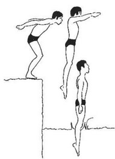

معلومات عامة عن السباحة:
تعتـبر السباحة مـن أقـدم الرياضـات عـلى وجـه البـشرية، حتـى أن السباحة تكاد أن تكون من أهم الرياضات التي يجب على الإنسان تعلمهـا، ذلـك لمـا لهـا من أهمية في اجتياز الكثير من المواقف التي قد يتعرض لها الإنسان، بحيث أنها قد تنقـذ حياته في موقف ما قد يتعرض له، في رحلة ترفيهية للبحر أو ما شابه. كما أن للـسباحة فوائـد عديـدة عـلى الـصحة البدنيـة والنفـسية والعقليـة، معـا، فهـي تريح الأعصاب، وتقـوي العـضلات، وتعطـي الـشعور بالراحـة والتـوازن البدني.
أهمية السباحة فسيولوجيًا:
تعتبر السباحة من أهـم الأنـشطة الرياضـية التـي يمارسها الإنـسان و تختلـف عـن بقيـة الفعاليات من خلال كونها تمارس داخل الماء و ليس مثل بقية الفعاليـات في اليابـسة، وحيث أن الماء أكثر كثافة من الهواء لذلك يتطلب جهدا بدنيا كبريا لغرض التغلب على عدة مقاومات تحيط بالفرد أثناء الأداء. و من خلال الملاحظة الدقيقة نجد ان الفرد يشعر بالراحة و الصحة و السعادة و الابتعادعن روتين الحياة اليومية و تكسبه أيضا مقاومة ضد الأمراض المختلفة .و تزداد فوائد مامرسة السباحة لجسم الإنسان و ما يحدث من تطـور داخـلي(تكيف) مع الوضع الجديد، حيـث أثبتـت الدراسـات الحديثـة و الـسابقة أن السباحة الرياضة الوحيدة التي تكون عضلات جسم الإنسان عاملـة بنـسبة لا تقـل عـن %80أثنـاء فـترة الأداء الفعليـة للرياضـة, مـع العلـم أن العـضلات الرئيـسية التـي تقـوم بالعمـل تبلـغ نـسبة الأداء فيهـا %100مثـل عـضلات الأطــراف العليــا و الأطــراف الــسفلى و هــذا مــا مييــز فعاليــة الــسباحة عــن بقيــة الفعاليات.
أهمية السباحة للجهاز الدوري:
من خلال ممارسة السباحة فان الأداء يتطلب طاقة عالية و توفري كميات مـن الاوكسجين المنقول عن طريق كريات الدم الحمراء التـي تتـضاعف نتيجـة لزيـادة الطلـب مـن قبـل العضلات و بقية أجزاء الجسم على الطاقـة و هـذه الزيـادة في الـدم تـؤدي إلى زيـادة في حجم القلب و كذلك زيادة في حجم الدفع القلبي –باستمرار الأداء للفعالية – لذلك نجد كبر حجم القلب و زيادة حجم الدم المدفوع في الضربة الواحدة و هذا يتطلـب زيـادة في حجم الأوعية الدموية التـي يـزداد قطرهـا عـن الوضـع الاعتيـادي و أيـضا زيـادة قابليـة الشعريات الدموية لزيادة قابلية التبادل مع العضلات العاملة بصورة خاصة و بقية أجـزاء الجسم بصورة عامة. و هذا بدوره يؤدي إلى انخفاض الضغط العالي للدم و الى ارتفاع بسيط في الضغط الواطئ و هو يبعد بذلك مرض القلب و الضغط المرتفع عند الإنسان.
أهمية السباحة للجهاز التنفسي:
ان الزيادة في عملية التمثيل الغذائي تتطلب توفر الاوكسجين و هذا بدوره يحدث تغيراً وتكيفا خاصا لدى السباحين من خلال زيـادة قابليـة التبـادل الغـازي للحويـصلات الرئويـة التي تزداد قدرتها على التبادل لسد الـنقص في كميـة الاوكسجين المطلـوب وهـذا بـدوره يؤدي الى زيادة السعة الرئوية لدى السباحين مـن خـلال زيـادة عـدد مـرات التـنفس في الدقيقة الواحدة و كذلك زيادة حجم الشهيق في المـرة الواحـدة، أمـا مـن ناحيـة قابليـة الحويصلات فإنها تزداد أيضا كرد فعل عن التكيف الحاصل مع هذه التغيرات الفسيولوجية.
أهمية السباحة للجهاز الحركي:
من خلال ما يبذله السباح أثناء أداء فعاليـة الـسباحة فـان التطـورات التـي تحـدث عـلى العضلات كثيرة منها:
أهمية السباحة للجهاز العصبي:
قد تكون هي اقل من بقية أجهزة الجسم الأخـرى إلا أنهـا الأهـم بـسبب مـا يمثله من أهمية عالية في جسم الإنسان حيث يتطلب التكيف بـني الحـوافز الصادرة من الدماغ و كـذلك الـورادة إلى الـدماغ و زيـادة في سرعـة تحليل و الإدراك لوضع الجسم و ما يتطلبه الموقف من أداء حيث أن الجهـاز العصبي يتكيف مع الوضع الجديد و كل ما يجري من تكيفات في أجهزة الجسم المختلفة نتيجة للتكيف الذي يحصل في الجهاز العصبي.
من الجانب العلاجي:
من حيث الفعل فـإن المـاء يعتـبر مـدلك طبيعـي لجـسم الإنـسان و كـذلك فانـه يحفـز النهايات العصبية في أجزاء الجسم المختلفة و ينـشط الـدورة الدمويـة و بـذلك يعمـل على إزالة التعب من جسم الإنسان. إن ممارسة السباحة ترفع من قدرة الإنسان لبناء خلايا الـدم الحمـراء و البيـضاء و بـذلك فهي ترفع من مقاومة الجسم للأمـراض المختلفـة و نتيجـة للعمـل العـضلي الكبـري يظهر تطور في مرونة في المفاصل و الرشاقة في أداء حركات السباحة.
أهمية السباحة نفسيًا وعلاجيًا:
نتيجة للضغوطات الكبيرة التي يتعرض لها الإنـسان في محيطـه اليـومي و الأعبـاء الكبيرة الروتينية فإن علماء النفس والاجتماع ينـصحون بإسـتمرار بـاللجوء الى ممارسة الـسباحة لكونها تزيل الأعباء و كذلك تبعده عن الضغط اليومي الذي يتعرض له فالـسباحة تسهم في علاج حالات نفسية كثيرة ليستعيد الراحة المطلوبة و العودة إلى الحياة الطبيعية من خلال ممارسة السباحة و تدفعه إلى تكوين علاقات اجتامعية مـع المحـيط الجديـد وهذا بدوره يدفع إلى زيادة الإنتاج .
تعريف الغرق:
يتم تعريف الغرق على أنه عملية المعاناة من اضطرابات تنفسية نتيجة للغمر في سائل. بالنسبة للضحايا الذين نجوا من حادث الغرق، يستخدم المصطلح (غرق غير مميت)، ولم يعد يتم استخدام مصطلح (شبه الغرق).
الموت الصامت:
غالباً ما يعتقد الناس أن الضحية التي تتعرض للغرق هي التي تصرخ وتضع حركات عنيفة بالتلويح أو رش الماء في الواقع. الغرق عادة ما يكون صامتاً. في حين أن حالة الطوارئ والبلع يمكن أن تحدث في بعض الأحيان في البداية، إلا أن الغرق النهائي سريع وفي معظمه صامت. عادة ما يكون الشخص الغارق غير قادر على الصراخ أو طلب المساعدة أو لفت الانتباه، لأن الفم داخل الماء بالفعل، وليس لدى الضحية ما يكفي من الهواء. بعد فترة من حالة الطوارئ والذعر، فإن الشخص يدخل تدريجياً في مرحلة انعدام الوعي، وتبقى تصرفات اللاوعي هي السلوك. تحدث تصرفات اللاوعي لمدة تتراوح بين 20 إلى 60 ثانية قبل أن تغوص الضحية إلى القاع، وبالمقارنة، فإن الشخص الذي لا يزال بإمكانه الصراخ والاستمرار في الضغط على فمه فوق الماء ليس عرضة لخطر الغرق بالمقارنة بالشخص الذي لا يستطيع القيام بذلك. لذلك، فإن الشخص الذي يتعرض للغرق يقوم بحركات لا إرادية. ليس من المنطقي للمشاهد غير المدرب أن يتعرف عليها بطريقة آمنة. لا يظهر هؤلاء الضحايا بشكل عام حالة من الذعر، لأن الغريق عادة لا يظهر أي إيماءات بيديه تطلب المساعدة.
أرقام خطيرة:
وفقاً لمنظمة الصحة العالمية (WHO) يتسبب في وفاة حوالي 372000 شخص سنوياً. بموجب أحدث تقرير صادر عن منظمة الصحة العالمية، معدلات الغرق في جميع البلدان وجميع الأعمار، ولكنه لا يعطي نفس الإحصاءات المتعلقة بالوفاة.
في حالة الغرق، يتم تحديد فرصة النجاة والبقاء على قيد الحياة اعتماداً على المكان الذي يقع فيه الحادث وعلى عاملين:
مراحل الغرق:
كيفية الانقاذ:
1. ان كنت مبتدئ في السباحة وغير محترف او لا تتمكن من السباحة في الأساس، فأفضل قرار هو الصرخ بين الناس لتنبيهم بحالة الغرق، والذهاب فوراً لأقرب منقذ واخباره بحالة الغرق او النداء عليه وهو سيتخذ اللوم محاولاً اللحاق بالغريق
2. ان كنت محترفاً في السباحة وهناك منقذ فالأولوية للمنقذ واخباره. أما ان لم يكن هناك منقذ في المنطقة المحيطة وقريب منك، ابدأ بالسباحة حتى تصل بالقرب من الضحية.
3. استعد للبدء في مساعدة الضحية على الطفو على الماء بكامل جسمه
4. اقترب من الغريق من خلفه ثم ابدأ بسحبه وفرد أطراف جسده كلها (بداية من الضعط الجزء العلوي ورقبته وانزلها للأسفل ليعلو الجزء الآخر حتى تتمكن من موازنة جسده بحيث لا يكون جزء منه في الاعلى والاخر في الأسفل كوضعية الوقوف بل يكون في وضعية النوم على الظهر وجسمه يطفو بشكل متوازن) على سطح الماء والطفو، فبذلك ستقلل من شدة محاولاته ان كان في المرحلة الثانية. وفي حالة محولتك لرفعه من الأسفل فسيقوم بتغريقك حتى يطفو هو استناداً عليك حتى تكون ان انت في الأسفل ولن تتمكن من الطلوع مرة أخرى حتى الغرق، ذلك بسبب غريزة البقاء وأنه يريد أن ينجو بأي طريقة علماً بأنه يكون غير مبال لشيء غير النجاة من الغرق بسبب خطورة وتوتر الموقف.
5. بعد أن تمكنه من فرد جسده على سطح الماء والطفو والتأكد من ذلك، امسك به جيداً من مفصلي كتفيه مع فرد وضعية جسدك مثل تماماً والطفو. لا تطفو تحت الغريق، بل اجعل جزءك العلوي على وجه الماء وافرد جسدك، على أن يكون الجزء السفلي من جسدك غير مفرود على نفس مستوى جزءك العلوي من جسدك ولا يكون بشكل عمودي واضح، بل اجعل جسدك مائل من الأعلى للأسفل بشكل سهم مائل، أو كمنحنى مائل.
6. بعد أن تنفذ الخطوة السابقة، حاول الذهاب إلى أقرب مكان أو اتجاه للخروج من المسطح المائي لانقاذ الضحية واخراجها، على ان يكون ذلك في اسرع وقت. يتم تحقيق تلك الخطوة باستخدام القدمين وليس اليدين لأنهم ممسكين بالضحية. على أن تكون حركة القدمين، نفس وضعية قدمين سباحة الصدر ولكن بالعكس وعلى الظهر (للرجوع للوراء ولأن الجسد مفرود على ظهره فلا يكون اتجاه العوم للأمام بل للخلف فتكون القدمين نفس حركة قدمين سباحة الصدر ولكن في الاتجاه المعاكس بسبب ان الجسد مطفو على الظهر وليس البطن)
7. بعد الوصول يجب اخراج الضحية سريعاً، والتحقق من ان كان بحالة جيدة أم لا. ان كان جيداً وقادر على التنفس وقلبه ينبض، فافضل خطوة اعطاءه الماء والانتظار معه حتى يكون قادراً على التعامل وبأفضل حال. ان لم يكن يتنفس أو قلبه لا ينبض، ففي أسرع وقت يجب الاتصال بالاسعاف، واخبار شخص آخر للاتصال أفضل حيث سيكون الوقت أسرع لأداء الخطوة التالية
8. في أثناء وصول الاسعاف، ابدأ في خطوة الانعاش القلبي الرئوي.
1. وضعية الرقبة:
يجب ألا تكون وضعية الرقبة أثناء الاستعداد للقفز وفي أثناء القفز مرفوعتان أو ان تكون العيون ناظرة للأمام. بل الصحيح هو جعل الرقبة للأسفل، في اثناء الاستعداد يجب ان تكون العين ناظرة للأسفل مع الرقبة، أي ان الرقبة للأسفل والعين في مستوى نظرها الطبيعي. وفي أثناء الطيران ينطبق نفس الكلام.
2. وضعية الذراعين:
يجب ان لا تكون الذراعين مثنيتان، بل الصحيح ان تكون مفرودة على اخرها ووراء الأذنين، كالسهم الموجه نحو الماء. وذلك لجعل المقاومة اقل وسرعة الوصول والنزول في الماء اسرع مع مسافة ابعد.
3. دخول اجزاء السباح اثناء القفز بترتيب خاطئ:
هناك العديد من الناس التي تدخل المياه من قفزتها بترتيب خاطئ. أي على سبيل المثال، دخول الوجه قبل الذراع، أو الجسد قبل الوجه او كلاهما معا، أو دخول القدمين للمياه قبل الجسد، أو نزول جميع اعضاء الجسد سوياً للماء في نفس اللحظة. والصحيح هو الترتيب التالي (الذراعين المشدودين والمفرودين وراء الأذن من الأصابع حتى الكتف، ثم الرأس والتي يكون وضعها للأسفل من الشعر في الأعلى للرقبة، ثم الجسد والذي يجب ان يكون مشدود بأكبر قدر ممكن من أعلى الظهر حتى آخره، ثم القدمين من الفخذة تدريجياً لأصابع القدم). ذلك الترتيب ان تم تنفيذه بشكل صحيح وقوي وسريع سيضمن انسيابية لداخل الماء وطاقة جيدة للسباحة بشكل كبير مع مقاومة أقل للماء.
4. القدمين مفتوحتين:
من الأخطاء الشائعة هو فتح القدمين اثناء الطيران بعد القفز وقبل نزول الجسد للمياه. وبذلك تفتح القدمين ويصبح بينهم مسافات قد تكون كبيرة، وتصبح قدم في الأسفل مع بقية الجسد، والأخرى في الأعلى وبينها وبين القدم الأخرى مسافة واسعة. ذلك لا يجعل مظهر القفز جيد بالإضافة لزيادة المقاومة ويقلل من الانسيابية لداخل المياه. والصحيح هو ابقاء القدمان متجاورتان شبه ملتصقتان في بعض من بعد الدفع والقفز وقبل نزول المياه (فور الطيران حتى الدخول في سطح المياه). ذلك سيقلل من المقاومة ويزيد من الانسيابية.
5. عدم دفع الذراعين للبلوك ومكان المسك:
من الخطأ الشائع استخدام القدمين فقط لدفع البلوك والقفز من عليه، وعدم استخدام الذراعين في شيء غير المسك. وبذلك يصبح المسك معدوم الأهمية من الأساس، فسبب مسك اليد للبلوك هو الدفع القوي لاخذ دفعة مع القدمين. ومع دفع الذراعين للبلوك تصبح القفزة أفضل وتصل لمسافة أبعد.
التمارين البدنية:
1. تمارين الخفة واللياقة: مثل تمارين السلم، وتمارين القفز على الصناديق، والركض السريع، وتدريبات "البوربي" (Burpees)
2. تمارين رد الفعل المباشر: مثل تمرين رمي الكرة والتقاطها. ابدأ برمي عملة معدنية والتقاطها بنفس اليد، ثم زد من عدد العملات لجعلها أصعب. أو اطلب من صديقك رمي كرة تنس بشكل عشوائي وحاول التقاطها قبل أن ترتد للمرة الثانية.
3. تمارين القفز بالمسدس (Pistol Squat Jumps): تمرين صعب يعمل على تحسين التوازن والتنسيق وردود الفعل
التدريب العقلي:
1. الألعاب الذهنية والألغاز: الأنشطة التي تتطلب اتخاذ قرارات سريعة مثل بعض ألعاب الفيديو (خاصة ألعاب الرماية من منظور الشخص الأول) والألغاز تساعد على تحسين سرعة رد الفعل.
2. اليقظة الذهنية: تقنيات مثل التأمل والتنفس المركز تعزز التركيز وتقلل من تأخير الاستجابة
تمارين محددة في الماء واليابسة:
1. انطلاقات متكررة (Start Repeats):
قف على المنصة، واطلب من المدرب أن يطلق الصافرة في أوقات غير متوقعة. ثم ركّز على القفز فور سماع الصافرة دون تردد.
2. تدريب “الغوص والتغيير” (Dive & Go):
انطلق من المنصة، ثم عند سماع الإشارة الثانية غيّر الاتجاه فجأة (إلى اليمين أو اليسار). ذلك يساعد على تطوير قدرة التبديل السريع في المواقف غير المتوقعة.
3. اللمسات السريعة (Quick Turns):
تدرب على اللمس والانعطاف بسرعة عند الحائط. واستخدم توقيتًا لتقليل زمن اللمس والانطلاق من الحائط تدريجيًا.
4. تمارين الكرة الطبية (Medicine Ball Reaction):
يقف الشريك أمامك ويلقي الكرة بشكل مفاجئ من اتجاهات مختلفة. وحاول الإمساك بها بسرعة.
5. تمرين الضوء أو الصافرة (Light or Sound Reaction):
استخدم تطبيقًا أو مصباحًا يضيء فجأة. وعند ظهور الضوء، اقفز أو اركض خطوة سريعة للأمام. ويحسن ذلك الاستجابة العصبية العضلية.
6. تمارين السرعة المفاجئة (Shadow Drills):
يتحرك المدرب أو الشريك عشوائيًا وأنت تقلده فورًا. ويمكن أن تكون حركات ذراع أو اندفاعات صغيرة.
7. قفزات سريعة من وضع الاستعداد (Quick Start Jumps):
قف في وضع الانطلاق، وعند الإشارة اقفز للأمام بأقصى سرعة. يقوّي العضلات المسؤولة عن الانطلاق ويزيد سرعة التفاعل.
تنظيم الوقت وتحديد الأولويات:
1. ضع جدولًا زمنيًا: خطط لجدول أسبوعي واقعي يخصص وقتًا محددًا للدراسة وأوقاتًا محددة للسباحة.
2. حدد الأولويات: في الأوقات التي تتزامن فيها الامتحانات أو المشاريع الكبرى مع التدريب، قد تحتاج إلى تقليل بعض جلسات التدريب أو التركيز على الدراسة بشكل أكبر في تلك الفترة.
3. استفد من أوقات الذروة: حدد أوقاتك الأكثر إنتاجية للدراسة والمذاكرة، وقم بالمهام الأكثر صعوبة خلال هذه الأوقات. غالبًا ما تكون السباحة الصباحية مفيدة في رفع مستويات الطاقة خلال اليوم.
تعزيز التركيز وتقليل التشتيت:
1. اختر البيئة المناسبة: هي بيئة دراسية هادئة وخالية من المشتتات، مثل إيقاف الإشعارات على هاتفك وجهاز الكمبيوتر.
2. ضع أهدافًا واضحة: قبل كل جلسة دراسة أو تدريب، حدد أهدافًا واضحة وقابلة للتحقيق.
3. نظم موادك: حافظ على مواد دراستك وأدواتك الرياضية منظمة لتوفير الوقت وتقليل التوتر.
الموازنة بين الراحة والنشاط:
1. التعافي النشط: استخدم السباحة كشكل من أشكال التعافي النشط. إذا كنت تتمرن على مجموعات عضلية مختلفة، يمكنك الجمع بين تمرين لعضلة ما والسباحة في يوم آخر.
2. أيام الراحة: لا تهمل أيام الراحة والاسترخاء. بعد تحقيق أهدافك، امنح جسمك وعقلك فرصة للتعافي. يمكنك ممارسة سباحة خفيفة أو القيام بأنشطة أخرى مثل المشي.
3. فهم جسمك: تعرف على أنماط طاقتك الشخصية وتجنب السباحة عند الشعور بالإرهاق الشديد.
نصائح إضافية:
1. اهتم بالترطيب: اشرب الكثير من الماء قبل وأثناء وبعد السباحة للحفاظ على وظائف الجسم ومنع الإرهاق، حيث أن تأثير السباحة المبرد يمكن أن يخفي أعراض الجفاف.
2. استمع إلى جسدك: اعتنِ بجسمك من خلال الإحماء قبل السباحة والتهدئة بعدها لتجنب الإصابات.
سباحة الحرة:
في السباحة الحرة، يكون الجسم منبطحًا ومسطحًا أسفل سطح الماء مباشرة، وتقوم الأرجل بركلة رفرفة ثابتة. تبدأ السباحة بذراع واحدة ممتدة للأمام في خط مستقيم مع الكتف ودخول الماء بالإبهام أولاً، ثم التجريف للأسفل والخلف باتجاه الفخذ. أثناء التعافي، يتم إرجاع الذراع نحو الرأس، مع الحفاظ على رفع الكوع فوق الجسم.
لأداء السباحة الحرة بشكل ممتاز وسريع، يجب التركيز على تقليل السحب وزيادة قوة الدفع عن طريق تحسين التقنيات الأساسية في الركل، والذراعين، والتنفس، والحفاظ على وضعية جسم انسيابية ومستقيمة. تدرب على سرعات عالية ولمسافات قصيرة مع فترات راحة مناسبة لتعزيز القوة والسرعة، وليس فقط التحمل.
تتضمن قواعد السباحة الحرة ما يلي:
1. الاندفاع بالجسم في الماء باستخدام دفعة من القدم مع مد الذراعين للأمام بحيث يكون الجسم في وضع أفقي والرأس مغمورًا في الماء.
2. تحريك الذراعين بالتناوب بدفع الذراع اليمنى من الأمام للخلف في الماء، ثم إخراجها وإعادتها إلى الأمام أثناء تحريك الذراع اليسرى من الأمام للخلف.
3. التنفس من الفم عن طريق إدارة الرأس إلى الجانب الأيمن أو الأيسر أثناء إخراج الذراع من الماء، ومن ثم إعادة الرأس في الماء وإخراج الزفير، ويؤخذ الشهيق بعد كل مرتين أو ثلاث.
4. تحريك الساقين لأعلى وأسفل بالتناوب بسرعة مع تحريك الذراعين، وينبغي إبقاء الركبة مثنية قليلًا وإرخاء الكاحلين.
تعتمد السباحة الحرة على مجموعة واسعة من العضلات، أهمها عضلات الجزء العلوي من الظهر (مثل العضلة الظهرية العريضة و العضلات المعينية )، وعضلات الذراعين والكتفين (مثل العضلة الدالية )، وعضلات الجذع (مثل عضلات البطن والمائلة )، وعضلات الساقين (مثل عضلات الفخذ الرباعية وأوتار الركبة والأرداف ). هذه العضلات مهمة للغاية لأنها تعمل معًا لتوفير القوة، والتحكم في الحركة، والحفاظ على الانسيابية في الماء، مما يحسن الأداء ويقلل من خطر الإصابة.
سباحة الظهر:
تشبه سباحة الظهر السباحة الحرة ولكن يكون الشخص فيها مستلقيًا على ظهره بدلًا من بطنه. تعد هذه الطريقة من أنواع السباحة التي تستهدف عضلات الكتف والكفة المدورة بشكل أساسي، علاوة على أنها تقوي عضلات الذراع، والأرداف، والساق، والبطن. تعمل سباحة الظهر أيضًا على إطالة العمود الفقري وينصح بها لمن يعانون من آلام الظهر، كما أنها تفيد الأشخاص الذين يجلسون فترات طويلة سواء في العمل أو المنزل.
تتضمن خطوات سباحة الظهر ما يلي:
1. دفع جدار المسبح بالقدمين عند البداية بحيث يكون الجسم مستلقيًا بشكل أفقي على الظهر.
2. جعل الجسم بالكامل تحت الماء مع إبقاء الرأس خارجها والنظر للسقف أو السماء والحفاظ على الذقن بعيدًا عن الصدر، والتنفس بانتظام.
3. تحريك الذراعين بالتناوب في صورة أشبه بحركة الطاحونة، فأثناء دفع الذراع اليمنى لأسفل تكون الذراع اليسرى لأعلى مع الحفاظ على استقامة الذراعين وإبقائها متحاذية في خط مستقيم مع جانب الجسم.
4. تحريك الساقين لأعلى وأسفل بالتناوب مع حركة الذراعين لدفع الجسم، والحرص على إبقاء الكاحل مرنًا مع حركة الساق.
تُشرِك سباحة الظهر عضلات الجزء العلوي والسفلي من الجسم بشكل أساسي، بما في ذلك عضلات الظهر (العضلة الظهرية العريضة، شبه المنحرفة، والمعينية)، والكتفين (الدالية)، والذراعين (العضلة ذات الرأسين والثلاثية الرؤوس). كما أنها تنشط عضلات الساقين مثل الأرداف، والرباعية، وأوتار الركبة، بالإضافة إلى عضلات البطن والمائلة للحفاظ على استقرار الجذع.
سباحة الصدر:
سباحة الصدر هي من أنواع السباحة المناسبة للمبتدئين، وتستهدف عضلات الجزء السفلي من الجسم بشكل أكبر من العلوي، حيث تركز على تقوية عضلات الأرداف، والفخذ، والساق وأسفل الظهر، بالإضافة إلى بناء عضلات الصدر والذراع.
تشمل طريقة سباحة الصدر ما يلي:
1. الانطلاق للسباحة بدفعة من القدم وجعل الجسم ممدودًا.
2. إبقاء الرأس في الماء وفرد الذراعين للأمام مع مراعاة أن يكون الإبهام لأعلى.
3. تحريك الذراعين معًا إلى الجانب والخلف في حركة دائرية مع قلب كف اليدين بحيث يشير الإبهام لأسفل، ومن ثم ضمهما تحت الماء عند الصدر وإعادة فردهما أمام الرأس مع رفع الجزء العلوي من الجسم.
4. التنفس في كل مرة أثناء رفع الرأس والصدر فوق سطح الماء.
5. تحريك القدمين في حركة تشبه ركلة الضفدع من خلال ثني الساقين معًا بحيث تصبح القدم بالقرب من الأرداف، ومن ثم فرد الساقين في آن واحد بقوة داخل الماء بعيدًا عن بعضهما، مع مراعاة ثني الكاحلين بحيث تتجه القدمين للخارج.
تعتمد سباحة الصدر على عضلات الجسم العلوي مثل العضلة الصدرية الكبرى والعضلات الظهرية العريضة والعضلة الدالية، بالإضافة إلى عضلات الذراعين (العضلة ذات الرأسين وثلاثية الرؤوس). كما تستخدم عضلات الجزء السفلي من الجسم، وتشمل عضلات الفخذ الرباعية، وأوتار الركبة، وعضلات الساق، وعضلات الأرداف لدفع الجسم وتقديم ركلة قوية.
سباحة الفراشة:
تعد سباحة الفراشة أصعب أنواع السباحة، حيث تحتاج لياقة بدنية عالية وتركيز ذهني للتمكن من تحريك الجسم بشكل إيقاعي منتظم. تفيد هذه الطريقة من السباحة في تحسين مرونة الجسم وهي من أنواع حركات السباحة التي تستهدف عضلات الجسم بأكمله خاصة عضلات البطن وأسفل الظهر والذراع والكتف والصدر، بالإضافة إلى أنها تقوي أيضًا عضلات الأرداف، وأوتار الركبة، والساق. تتميز سباحة الفراشة بأنها تحرق كمية كبيرة من السعرات الحرارية مقارنة بباقي أنواع السباحة، حيث قد تبلغ السعرات الحرارية التي يحرقها الشخص في نصف ساعة من 330 إلى 488 سعرة حرارية، ولكن بالطبع يعتمد الأمر على عدة عوامل مثل الوزن والسرعة.
يمكن إجراء سباحة الفراشة عن طريق:
1. الاندفاع بالجسم إلى الأمام بحيث يكون الوجه في الماء والذراعان ممدودين للأمام.
2. رفع الذراعين فوق الماء بأقصى انفتاح مع رفع الرأس والصدر عن سطح الماء، ثم دفع الذراعين في آن واحد للخلف في الماء مع مراعاة أن يكون الإبهام متجهًا لأسفل، وأثناء ذلك يجب إنزال الجزء العلوي من الجسم والرأس في الماء.
3. التنفس كل دورتين أو ثلاث من الفم أثناء رفع الرأس وإخراج الزفير عند إنزال الرأس في الماء.
4. تحريك الساقين عن طريق ثني الركبتين ثم فردهما معًا بقوة في نفس الوقت.
5. تجدر الإشارة إلى أنه ينبغي أن تكون حركة الجسم الكلية تشبه الموجة وبإيقاع منتظم مع جعل الجسم قريبًا من السطح.
تتضمن العضلات المستخدمة في سباحة الفراشة عضلات الذراعين، مثل العضلة الصدرية الكبرى، والعضلة الظهرية العريضة، والعضلات ثلاثية ورؤوس ثنائية الرأس، بالإضافة إلى عضلات الجذع والساقين. تُعتبر هذه السباحة من الأصعب وتتطلب استخدام جميع عضلات الجسم تقريبًا.
TikTok
Instagram
Facebook
YouTube
presslikeonyourmind@gmail.com
+20 1129473308
Also you can see our future content on those pages.
In addition if you want to contact us either through Gmail or Whatsapp feel free to do it.